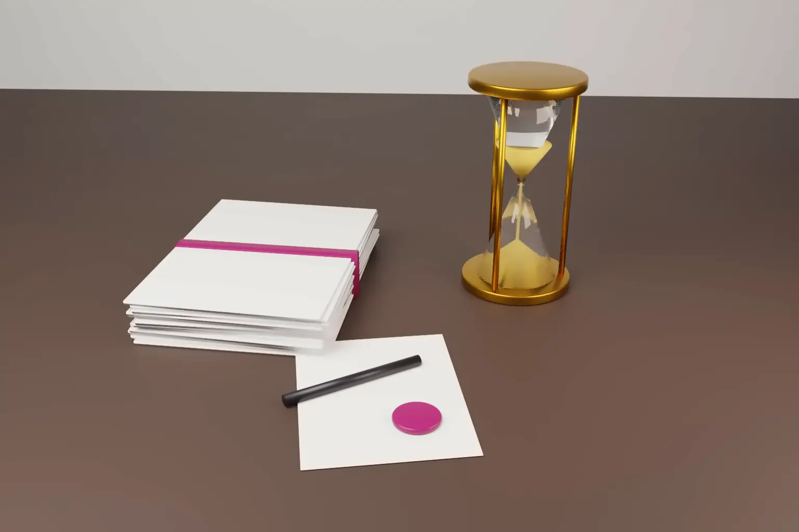

What does a provisional patent application actually protect? It fixes a filing date for what it describes, and nothing more. India and the US both offer a provisional application with a 12 month life. The EPO and the UK IPO have no separate provisional form, but an early filing there works in much the same way.
The value of any first filing depends on one question. Does the later application claim something the first filing clearly described? If it does, the claim keeps the early date. If it does not, the claim falls back to the later date, and anything published in between can be cited against it.
- In India, a complete specification must follow a provisional within 12 months. Otherwise section 9(1) of the Patents Act, 1970 deems the application abandoned.
- In the US, a provisional needs no claims and lapses 12 months after filing under 35 U.S.C. § 111(b). The later application must normally be filed within that period. A petition can extend it by two months for unintentional delay.
- The EPO has no provisional form. It accepts a US or Indian provisional as a priority filing, and an EPO filing without claims still receives a date.
- In every system, a claim keeps the early date only if the first filing supports it. A short provisional rarely supports the claims that matter.
- Indian residents need a foreign filing permit, or an Indian filing made at least six weeks earlier, before filing a first application abroad.
What a provisional application is
A provisional application is a first filing that describes the invention without claims or the other formal parts. It is not examined. Its only job is to fix a date. Within 12 months the applicant files the full application, which is examined and granted. The provisional then matters only as evidence of what was described, and when.
India: provisional and complete specifications
Section 9(1) of the Patents Act, 1970 requires a complete specification within 12 months of a provisional one. If it is not filed in time, the application is deemed to be abandoned. Section 10(1) says every specification, provisional or complete, must describe the invention and carry a title. The requirement for claims and an abstract in section 10(4) applies only to the complete specification.
The priority date of each claim is decided under section 11. A claim in the complete specification that is fairly based on the matter disclosed in the provisional gets the provisional filing date. A claim that is not fairly based on it gets the date of the complete specification.
Under section 9(2), several related provisionals by one applicant may be covered by one complete specification, with the 12 months running from the earliest. Under section 9(4), the Controller may cancel the provisional on request before grant and postdate the application to the complete specification.
The Indian provisional route is for national first filings only. Section 9(1) excludes convention applications and PCT national phase applications. The official fee is the same Form 1 fee as any application. Our step by step guide to filing a patent in India sets out the forms, fees and later deadlines.
United States: the provisional application under section 111(b)
Under 35 U.S.C. § 111(b), a provisional must contain a specification meeting section 112(a) and any drawings required by section 113. Claims are not required. The filing date is the date the specification is received. The application is abandoned 12 months after filing and cannot be revived after that period.
Section 119(e)(1) gives a later nonprovisional or PCT application the benefit of the provisional date. Three conditions apply. The later application must be filed within 12 months. It must name an inventor in common and refer specifically to the provisional. The provisional must describe the claimed invention in the manner section 112(a) requires, except for best mode. The statute lets the USPTO extend the 12 months by two more months where the delay was unintentional.
The official fee is low. The current USPTO filing fee for a provisional is $325, $130 or $65, by entity size. A size fee applies above 100 sheets.
The early date is not presumed. In Dynamic Drinkware v National Graphics (Fed. Cir. 4 September 2015, No. 2015‑1214), the court refused to presume that a prior art patent was entitled to its provisional date. The petitioner relying on that date had to prove that the provisional supported the claims. Support is therefore tested only when it matters, often in litigation or an inter partes review.
Europe: no provisional, but an early first filing works
The European Patent Convention has no provisional application. Under Article 87(1) EPC, a filing in a Paris Convention state or WTO member gives 12 months of priority for the same invention. Under Article 87(3), any filing that establishes a filing date counts, whatever later happens to it. A 1996 notice of the EPO President (OJ EPO 1996, 81) confirms that a US provisional gives a right of priority.
The EPO can itself act as the first filing office. Under Rule 40(1) EPC, a filing date needs only a request for a patent, applicant details and a description. Claims can follow later under Rule 58. An applicant can therefore file a description at the EPO and use it as a priority basis within 12 months.
The priority test is strict. The EPO Guidelines apply the test from G 2/98. The claimed subject matter must be directly and unambiguously derivable from the priority document as a whole. A broad statement of the idea will not carry a narrower claim that adds a feature described only later.
Ownership also matters. In G 1/22 and G 2/22 of 10 October 2023, the Enlarged Board held that the EPO may assess entitlement to priority. It held that an applicant who claims priority correctly is presumed to be entitled to it, and the presumption is rebuttable. This helps where a US provisional was filed in the inventors' names and the later application in the company's name. Clear assignments remain the safer course.
United Kingdom
The UK IPO also has no provisional form. Under section 15(1) of the Patents Act 1977, a filing date needs a request, applicant details and a description. Claims and the abstract must follow within the prescribed period under section 15(10). Under section 5(2), an invention supported by matter disclosed in an earlier application filed in the previous 12 months takes that earlier date. A late declaration can be allowed where the failure to file within 12 months was unintentional.
Where the routes differ
- Name and form. India and the US have a named provisional application. The EPO and the UK use an ordinary first filing without claims.
- Support standard. India asks whether a claim is fairly based on the provisional. The US asks whether the provisional meets the written description and enablement requirements of section 112(a). The EPO asks whether the claim is directly and unambiguously derivable. The UK asks whether the invention is supported by matter disclosed. The EPO test is usually the hardest to meet.
- Late filing. The US statute allows two extra months for unintentional delay. The EPO can restore the priority period if all due care was taken. The request and the European filing must both follow within two months. Section 9(1) of the Indian Act states the 12 months as a fixed period with deemed abandonment.
- Where to file first. Section 39 of the Indian Act bars an Indian resident from filing abroad without a written permit. The exception is an Indian application filed at least six weeks earlier with no secrecy direction in force.
Practical steps
- Write the provisional as if it were the complete. Describe every embodiment, alternative and parameter range you may later want to claim. Include working examples and drawings. Add draft claims even where they are optional, because they show what you regarded as the invention.
- File again before each disclosure. If the design changes before a launch, a pitch or a paper, file a further provisional. In India, section 9(2) allows related provisionals to be covered by one complete specification.
- Keep the ownership chain clean. Take written assignments from inventors before the first filing. Name the same applicant in later filings where possible.
- Plan the foreign route before you file. Indian residents should file first in India or obtain a section 39 permit. Use the 12 month window to decide on a PCT application or direct national filings. Our note on when to file a PCT application covers that choice.
- Diarise 12 months from the first filing. A later provisional does not restart the period for matter already disclosed.
For foreign applicants filing in India, see our guide to India patent filing for foreign applicants. For official fees in each office, see our patent filing cost comparison.
Frequently asked questions
How long is a provisional patent application valid?
Twelve months in both India and the US. In India the complete specification must be filed within that period. In the US the later application must be filed within 12 months to claim the provisional date.
Can a US provisional application be used to claim priority in India or Europe?
Yes. A US provisional fixes a filing date, so a later Indian or European application can claim its priority within 12 months. Each claim keeps that date only if the provisional supports it.
Does a provisional patent application need claims?
No. Neither Indian nor US law requires claims in a provisional. Claims are required in the complete or nonprovisional application. Including draft claims in the provisional is still good practice.
Official source
- The Patents Act, 1970, section 9 (IP India)
- The Patents Act, 1970, section 11 (IP India)
- 35 U.S.C. § 111 and 35 U.S.C. § 119
- USPTO fee schedule
- Article 87 EPC and EPO Guidelines A‑II, 4.1 (date of filing)
- Notice of the EPO President on US provisional applications, OJ EPO 1996, 81
- EPO press communiqué on G 1/22 and G 2/22, 10 October 2023
- Patents Act 1977, section 15 and section 5
- Dynamic Drinkware v National Graphics, Fed. Cir. 2015